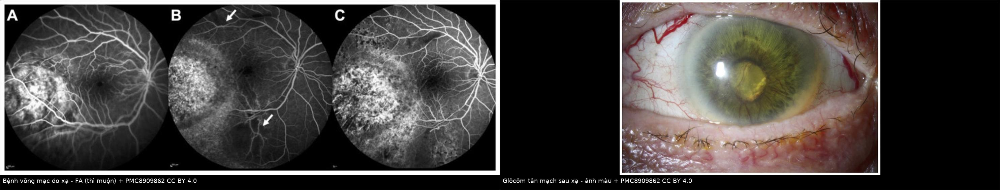
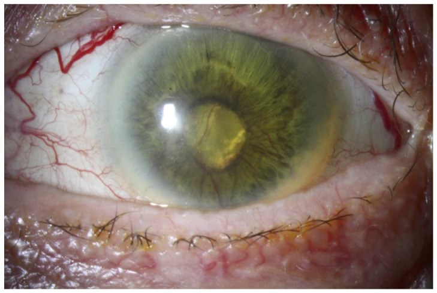
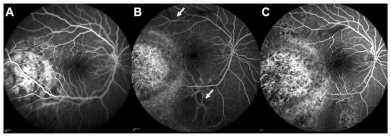
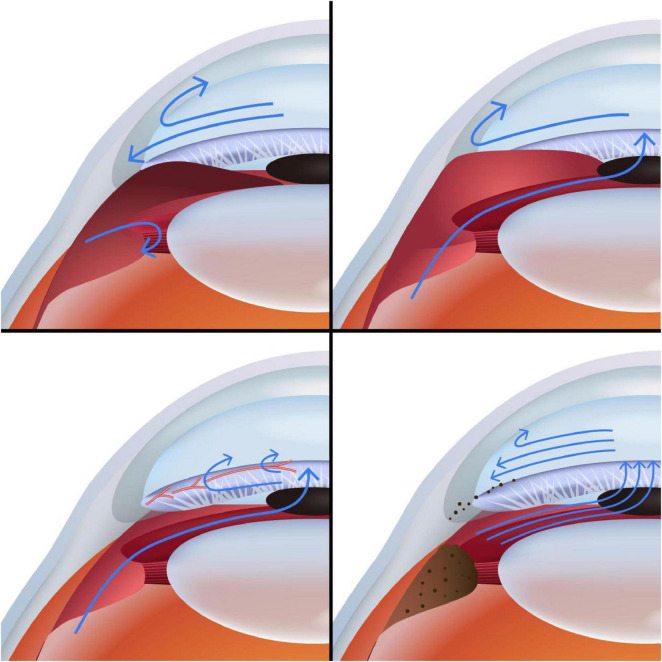

1450 — Glôcôm sau xạ trị ở trẻ: tân mạch góc, góc hẹp do phù thể mi, corticoid / Radiation-induced glaucoma after retinoblastoma radiotherapy
Tags: pattern:tang-nhan-ap pattern:glaucom-tan-mach pattern:goc-dong pattern:teo-vong-mac vung:mat vung:goc-tien-phong vung:the-mi protocol:do-nhan-ap protocol:UBM protocol:gonioscopy protocol:FA protocol:OCT protocol:CPC incidentaloma:khong
Mức chắc chắn (certainty): tổng hợp y văn (literature synthesis) — 1 review cơ chế glôcôm do ung thư (Front Med 2025, PMC12392418, CC BY), 1 review biến chứng mắt do xạ (Cancers 2022, PMC8909862, CC BY), 2 loạt plaque I-125 ở trẻ RB (Ophthalmology 2001, PMID 11713089; Ophthalmology 2006, PMID 16949158), 1 loạt plaque RB kháng trị 20 mắt (J Clin Med 2025, PMC11901221, CC BY), PENTEC về liều–độc tính mắt (Int J Radiat Oncol Biol Phys 2024, PMID 37565958), 1 review dịch tễ học tác dụng phụ xạ (Int J Radiat Biol 2021, PMC10656152), 1 nghiên cứu IOP bình thường ở trẻ (Eye 2022, PMC9151725), 1 meta-analysis van dẫn lưu ở trẻ (Surv Ophthalmol 2023, PMID 36740196), 1 nghiên cứu quang đông thể mi micropulse (Eur J Ophthalmol 2020, PMID 31256680), Cochrane anti-VEGF trong NVG (2023, PMID 37010901), và 1 nghiên cứu tăng nhãn áp do corticoid ở trẻ (Acta Ophthalmol 2021, PMID 33629533). Không có ca nguyên văn do nhóm tự viết; ảnh quiz lấy từ bài gốc, ghi rõ PMCID và bối cảnh người lớn khi cần.
Câu chốt: glôcôm sau xạ trị không phải một bệnh mà là 4 cơ chế chồng nhau: (1) tân mạch góc (NVG) do bệnh võng mạc do xạ, (2) góc hẹp do phù thể mi/tràn dịch hắc mạc, (3) tăng nhãn áp do corticoid, và (4) bít bè do tế bào u/máu. Sau plaque I-125 ở trẻ RB, glôcôm tích lũy 5 năm 11% (loạt 208 u) và 4% (loạt 84 u); NVG 5% trong loạt plaque kháng trị. Ở trẻ, IOP bình thường 5–20 mmHg (trung bình 11,5) — nên > 21 mmHg là bất thường, nhưng phải đo đúng điều kiện vì gây mê làm IOP giảm > 20%. Điều trị không bao giờ tách rời khỏi kiểm soát u: không đặt van/lọc trong mắt còn u hoạt động.
1. Tổng quan bệnh học – cơ chế hình ảnh
1.1 Bối cảnh: ai bị, khi nào
- Retinoblastoma (RB) là u nội nhãn ác tính hay gặp nhất ở trẻ; xạ trị còn dùng ở plaque I-125 (liều đỉnh 40–50 Gy, thường 45 Gy) cho u kháng trị hoặc tái phát, proton beam, và EBRT trong một số hoàn cảnh (PMC11232864). Xạ cứu mắt nhưng để lại tổn thương mạch máu võng mạc, thể mi và bè.
- Thời điểm: NVG thường muộn (tháng–năm) sau xạ; góc hẹp do phù thể mi có thể sớm (ngày–tuần); tăng nhãn áp do corticoid 2–6 tuần sau khi bắt đầu corticoid. Vì vậy một lần IOP bình thường không loại trừ — phải theo dõi dọc.
- Tần suất: sau plaque cho RB, glôcôm 11% lúc 5 năm (208 u, 141 trẻ) và 4% (84 u tái phát sau chemoreduction); tân mạch mống mắt 8% ở loạt thứ hai (PMID 11713089; PMID 16949158). Loạt plaque kháng trị 20 mắt: NVG 5% (1/20) (PMC11901221). Trong RB nói chung, 22% có glôcôm kháng trị do xâm lấn góc hoặc tân mạch mống mắt — con số này gộp cả u và xạ, không tách riêng (PMC12392418).
1.2 TẠI SAO xạ gây glôcôm — 4 cơ chế, giải thích bằng vật lý và mô bệnh
- Tân mạch góc (NVG) — cơ chế chính của thể muộn. Xạ làm tổn thương tế bào nội mô mao mạch võng mạc → mất tưới máu mao mạch (thấy trên FA là vùng tối không ngấm) → thiếu oxy nội võng mạc → HIF-1α tăng → VEGF tăng → tân mạch mống mắt và góc. Tân mạch ban đầu chưa làm tăng IOP (pha 1), sau đó màng xơ mạch co kéo dính góc → góc đóng dính → IOP tăng vọt. Đây là lý do điều trị tân mạch sớm có ý nghĩa hơn chờ IOP tăng (PMC12392418; PMC8909862).
- Góc hẹp do phù thể mi/tràn dịch hắc mạc. Xạ gây phù và thiếu máu thể mi, tràn dịch hắc mạc, làm thể mi xoay ra trước, đẩy chân mống mắt vào góc → tiền phòng nông, góc đóng không có dính ban đầu. Trên UBM: thể mi dày, dịch dưới thể mi, góc hẹp; không có tân mạch. Cơ chế này hồi phục nếu điều trị đúng (cycloplegic + corticoid), và dùng pilocarpine sẽ làm nặng hơn vì co đồng tử kéo mống mắt vào thể mi đang phù.
- Tăng nhãn áp do corticoid. Corticoid làm tăng glycosaminoglycan ở bè và ức chế tái cấu trúc sợi, tăng sức cản thoát dịch tiền phòng. Ở trẻ dùng corticoid toàn thân liều cao, 56% có đáp ứng tăng IOP (định nghĩa tăng ≥ 6 mmHg hoặc đỉnh ≥ 21 mmHg) và 12% là đáp ứng mạnh (đỉnh 32–44 mmHg); trẻ nhỏ có nguy cơ cao hơn (PMID 33629533). Vì vậy mỗi lần tăng corticoid phải kèm đo IOP, không quy mọi tăng IOP cho "bệnh nặng lên".
- Bít bè do tế bào u, máu, hạt sắc tố. U xâm lấn góc, gieo tế bào vào tiền phòng (pseudohypopyon), máu tiền phòng và hemosiderin trong bè đều làm tắc đường thoát. Đây là cơ chế nguy hiểm nhất vì gọi nhầm là biến chứng xạ sẽ bỏ sót tái phát u.
1.3 Ngưỡng định lượng trụ cột
| Đại lượng | Con số | Nguồn |
|---|---|---|
| Liều plaque I-125 cho RB | 40–50 Gy (thường 45 Gy đỉnh), 3–4 tuần | PMC11232864; PMC11901221 |
| Glôcôm sau plaque (RB) | 11% lúc 5 năm (208 u); 4% (84 u); NVI 8% | PMID 11713089; PMID 16949158 |
| NVG sau plaque kháng trị | 5% (1/20 mắt) | PMC11901221 |
| Bệnh võng mạc do xạ (PENTEC) | 5% ở 42 Gy, 50% ở 62 Gy | PMID 37565958 |
| Bệnh thần kinh thị do xạ (PENTEC) | 5% ở 57 Gy, 50% ở 64 Gy | PMID 37565958 |
| Đục thể thủy tinh do xạ | 50% ở 9 Gy (chẩn đoán bởi bác sĩ) | PMID 37565958 |
| Glôcôm do xạ (dịch tễ) | chỉ ghi nhận ở liều > 5 Gy; là tissue reaction | PMC10656152 |
| Glôcôm kháng trị trong RB (gộp u + xạ) | 22% do xâm lấn góc/tân mạch | PMC12392418 |
| IOP bình thường ở trẻ 0–12 tuổi | 5–20 mmHg, trung bình 11,5 ± 2,3 | PMC9151725 |
| IOP dưới gây mê | < 8 mmHg (< 3 tháng), < 12 mmHg (6–9 tháng); ước 0,71 × tuổi + 10 | J Fr Ophtalmol 2009 (PMID 19515328) |
| Đáp ứng corticoid ở trẻ | 56% tăng IOP, 12% đáp ứng mạnh (đỉnh 32–44 mmHg) | PMID 33629533 |
1.4 Vì sao trẻ khác người lớn
- Củng mạc còn giãn: IOP cao kéo dài làm nhãn cầu to ra (buphthalmos), giác mạc to > 12 mm, rạn Haab, cận thị trục dài — trông như glôcôm bẩm sinh nếu không hỏi tiền sử xạ.
- Đo IOP khó: trẻ nhỏ cần gây mê/topical + Perkins hoặc Tono-Pen/iCare; sevoflurane làm IOP giảm (CV > 20% ở mọi giai đoạn mê), nên một trị số thấp dưới mê không loại trừ glôcôm (PMID 33759070).
- Không đo được thị lực/thị trường: phải dựa vào OCT RNFL/GCL, đáy mắt, khám dưới mê (EUA) và theo dõi liên tục — không chờ trẻ "kêu mờ mắt".
2. Mẫu hình + chẩn đoán phân biệt theo cơ chế (Gamut)
Mẫu hình chung: trẻ đã xạ trị RB, nhãn áp > 21 mmHg (hoặc chênh > 5 mmHg so với mắt bên), giác mạc có thể đục, tiền phòng nông hoặc sâu, đồng tử dính, mống mắt có tân mạch.
- Tân mạch (NVG): tân mạch bờ đồng tử trước, lan ra góc; FA có vùng không tưới máu; thường sau 6 tháng–nhiều năm; mắt có thể đã teo thị.
- Góc hẹp do phù thể mi/tràn dịch hắc mạc: tiền phòng nông, UBM thể mi dày/dịch, không tân mạch, thường sớm sau xạ, đau nhiều.
- Corticoid: góc mở, không tân mạch, IOP tăng 2–6 tuần sau bắt đầu corticoid, giảm khi ngừng.
- Bít bè do u/máu: pseudohypopyon, máu tiền phòng, khối u ở góc, tăng kích thước theo tháng; đây là tái phát/u hoạt động cho tới khi chứng minh ngược lại.
- Nguyên nhân khác cần loại trừ: glôcôm bẩm sinh (giác mạc to, rạn Haab, không tiền sử xạ), glôcôm sau phaco ở mắt RB (bài 1643), glôcôm do dầu silicone nếu mắt đã phẫu thuật (bài 1416), viêm màng bồ đào gây dính góc.
3. Bảng so sánh phân biệt (ma trận đối chiếu)
| Thực thể (entity) | Hình ảnh điển hình | Chốt vào (rule-in) | Chốt loại (rule-out) | Gợi ý xác nhận |
|---|---|---|---|---|
| NVG sau xạ | Tân mạch bờ đồng tử → góc, dính góc, FA vùng không tưới máu, đĩa thị lõm | Tân mạch góc + FA thiếu máu + tiền sử xạ | Không tân mạch, góc mở, FA tưới máu bình thường → không phải NVG | Gonioscopy + FA/ICGA; OCT RNFL |
| Góc hẹp do phù thể mi | Tiền phòng nông, UBM thể mi dày/dịch, góc hẹp không dính, không tân mạch | UBM có dịch/dày thể mi + tiền phòng nông | Tân mạch + dính góc → NVG; góc mở → bít bè | UBM 50 MHz; AS-OCT |
| Tăng nhãn áp do corticoid | Góc mở, không tân mạch, IOP tăng sau corticoid, giảm khi ngừng | Dùng corticoid + góc mở + IOP giảm sau ngừng 2–4 tuần | Tân mạch, dính góc, khối u → nguyên nhân khác | Ngừng thử corticoid; đo IOP 2 tuần/lần |
| U xâm lấn/gieo tế bào góc | Pseudohypopyon, máu tiền phòng, khối ở góc, tăng kích thước | Tế bào u trong tiền phòng/dịch tiền phòng + khối mới | Không khối, ổn định qua 3–6 tháng | Chọc dịch tiền phòng tế bào học; B-scan; MRI |
| Máu tiền phòng/hemosiderin | Máu tiền phòng, lắng đọng nâu ở bè, IOP tăng sau nhiều đợt | Tiền sử chảy máu + hemosiderin ở góc | Không máu, không lắng đọng | Gonioscopy; siêu âm |
| Glôcôm bẩm sinh/tiền có | Giác mạc to, rạn Haab, không tiền sử xạ, xuất hiện sớm | Giác mạc > 12 mm + rạn Haab + không xạ | Tiền sử xạ + tổn thương mạch máu võng mạc | Đo đường kính giác mạc, khúc xạ, UBM |
| Teo nhãn (phthisis) | Nhãn cầu teo, IOP thấp, không đau | IOP thấp + nhãn cầu teo | IOP cao → không phải teo nhãn | B-scan; đo IOP |

Trái: FA thì muộn sau plaque — vùng không tưới máu (mũi tên) là nền của thiếu oxy và VEGF. Phải: glôcôm tân mạch sau xạ proton — tân mạch mống mắt, phù giác mạc, đồng tử dính. Cả hai ảnh từ Cancers 2022 (PMC8909862), CC BY 4.0; ảnh ghép letterbox, không crop.Dấu hiệu đọc chuẩn xác
- Tân mạch mống mắt: bắt đầu ở bờ đồng tử (không phải góc) rồi lan ra góc; gonioscopy phải làm trước khi kết luận "góc mở".
- FA: vùng không tưới máu (nonperfusion) là chứng cứ thiếu máu; không đốt laser nếu OCTA còn dòng chảy (bài 1419).
- UBM: phân biệt phù thể mi (góc hẹp hồi phục) với dính góc (NVG) — hai hướng điều trị ngược nhau.
4. Protocol chụp + hệ phân độ/điểm chuẩn hóa
4.1 Theo dõi sau xạ trị RB
- EUA (khám dưới mê) mỗi 3 tháng trong 2 năm đầu, mỗi 6 tháng tới 5 năm, hằng năm sau đó — cùng lịch với bài 1419; mỗi lần đo IOP (Perkins/Tono-Pen), đường kính giác mạc, khúc xạ, gonioscopy khi làm được, đáy mắt + B-scan, OCT RNFL/GCL nếu hợp tác.
- Chụp ảnh màu + FA/ICGA khi nghi NVG hoặc bệnh võng mạc do xạ; UBM khi tiền phòng nông; AS-OCT khi cần đánh giá góc.
- Ngưỡng hành động: IOP > 21 mmHg hoặc chênh > 5 mmHg so với mắt bên, tăng ≥ 6 mmHg so với nền, hoặc góc bắt đầu dính/tân mạch mới → khám lại sớm và điều trị.
4.2 Liều xạ và phòng ngừa
- PENTEC: bệnh võng mạc 5% ở 42 Gy / 50% ở 62 Gy; bệnh thần kinh thị 5% ở 57 Gy / 50% ở 64 Gy; đục thể thủy tinh 50% ở 9 Gy (PMID 37565958). Đây là ngưỡng người lớn/trẻ gộp, không phải ngưỡng riêng cho trẻ.
- Giảm liều nhãn cầu bằng plaque che chắn hoặc proton khi có thể; EBRT tránh ở RB thể mầm vì ung thư thứ phát 53% ở tuổi 50 (PMC11232864).
- Không có "ngưỡng an toàn" tuyệt đối: glôcôm do xạ đã ghi nhận ở > 5 Gy (PMC10656152) — vì vậy theo dõi IOP suốt đời, kể cả liều thấp.
4.3 Thuật toán xử trí
flowchart TD
A[Tre da xa tri RB<br/>IOP tren 21 mmHg hoac chenh 5 mmHg] --> B[Do lai dung dieu kien<br/>EUA/Perkins, gonioscopy, UBM]
B --> C{Co u hoat dong<br/>hoac te bao u o goc?}
C -->|Co| D[Hoi chan ung thu nhi<br/>dieu tri u: hoa chat/plaque/enucleation]
C -->|Khong| E{Tan mach goc<br/>hoac FA thieu mau?}
E -->|Co| F[Anti-VEGF ngan han<br/>+ PRP vung thieu mau<br/>+ thuoc ha ap]
E -->|Khong| G{Goc hep do<br/>phu the mi/dich hac mac?}
G -->|Co| H[Cycloplegic + corticoid<br/>KHONG pilocarpine<br/>theo doi UBM]
G -->|Khong| I{Goc mo, dang dung corticoid?}
I -->|Co| J[Ngung/thay corticoid<br/>do IOP 2 tuan/lan]
I -->|Khong| K[Bít be do mau/hemosiderin<br/>hoac nguyen nhan khac]
F --> L{Da kiem soat duoc?}
H --> L
J --> L
K --> L
L -->|Khong| M[CPC diode<br/>hoac van dan luu]
L -->|Co| N[Theo doi 3-6 thang<br/>OCT RNFL/GCL + FA khi can]
M --> O{Mat mu, dau,<br/>khong con thi luc?}
O -->|Co| P[Enucleation giam dau]
O -->|Khong| N
4.4 Hiệu quả các lựa chọn (số liệu để tư vấn)
- Thuốc hạ áp: bước đầu; beta-blocker thận trọng ở trẻ hen; ức chế carbonic anhydrase (acetazolamide) khi cần hạ nhanh; alpha-2 agonist có thể gây ngủ ở nhũ nhi.
- Anti-VEGF trong NVG: Cochrane 2023 — giảm IOP −6,37 mmHg ở 4–6 tuần (bằng chứng rất thấp), không có bằng chứng dài hạn; là điều trị bổ trợ, không thay PRP/phẫu thuật (PMID 37010901). Trong RB, phối hợp chuyên khoa u vì nguy cơ lý thuyết về gieo tế bào u.
- Quang đông thể mi (CPC) micropulse: IOP 37,5 → 20,0 mmHg sau 15 tháng (giảm 37,2%), nhưng 66,7% cần lần 2 (PMID 31256680). Chỉ làm khi u đã kiểm soát.
- Van dẫn lưu (GDD) ở trẻ: thành công 87% / 77% / 54% / 37% ở 12 / 24 / 48 / 120 tháng (32 nghiên cứu, 1.221 mắt) (PMID 36740196).
- Nguyên tắc an toàn ung thư: không lọc/đặt van ở mắt còn u hoạt động vì nguy cơ gieo tế bào u theo đường mổ; ưu tiên kiểm soát u trước, và enucleation nếu mắt mù đau (PMID 30562240).
5. Biến thể bình thường và cạm bẫy
- "IOP dưới mê bình thường" — sai: sevoflurane làm IOP giảm; CV > 20%; phải đo cùng độ sâu mê và so nhiều lần (PMID 33759070).
- "Giác mạc to là glôcôm bẩm sinh" — ở trẻ đã xạ, buphthalmos do xạ có thể xuất hiện muộn; hỏi tiền sử xạ trước khi quy cho bẩm sinh.
- "Corticoid là vô hại" — 56% trẻ tăng IOP khi dùng corticoid toàn thân; 12% đáp ứng mạnh; luôn đo IOP sau khi bắt đầu (PMID 33629533).
- "Tân mạch = phải đốt laser ngay" — nếu OCTA còn dòng chảy, có thể chỉ trắng mạch thoáng qua; đốt vội gây teo võng mạc (bài 1419).
- "Góc hẹp thì dùng pilocarpine" — sai trong phù thể mi: pilocarpine kéo mống mắt vào thể mi đang phù, làm góc hẹp hơn; dùng cycloplegic.
- "Glôcôm sau xạ không cần tìm u" — sai: pseudohypopyon/máu tiền phòng ở mắt RB luôn phải loại trừ tái phát trước khi gọi là biến chứng xạ.
- Bẫy "satisfaction of search": thấy tân mạch là dừng, bỏ sót khối u ở cực sau hoặc di căn trên cùng MRI.
6. Tự lượng giá — Blind Quiz ngay trên trang tĩnh
Ca 1 — Trẻ 3 tuổi, RB nhóm D mắt trái đã plaque 18 tháng. Mắt đỏ, nhìn kém, IOP 34 mmHg.

- Gợi ý lâm sàng: không sốt, không chấn thương; mắt đã xạ, u trên B-scan ổn định; tiền phòng nông nhẹ.
- Câu hỏi: (1) Dấu hiệu chính? (2) Cơ chế nào dẫn tới IOP 34? (3) Bước tiếp theo trước khi đặt van?
Bấm để hiện đáp án (findings + chẩn đoán)
- Tân mạch mống mắt + phù giác mạc + đồng tử dính = NVG; ở mắt đã xạ, nguyên nhân nền là bệnh võng mạc do xạ → thiếu máu → VEGF.
- Cần FA/ICGA tìm vùng không tưới máu và gonioscopy xem dính góc; loại trừ u hoạt động bằng B-scan/MRI trước khi can thiệp.
- Điều trị: thuốc hạ áp + anti-VEGF ngắn hạn + PRP vùng thiếu máu; không đặt van/lọc khi còn u hoạt động. Nếu u đã kiểm soát và IOP không giảm → CPC hoặc van (thành công GDD giảm dần: 87% ở 12 tháng → 37% ở 10 năm).
- Lưu ý nguồn ảnh: hình minh hoạ từ bệnh nhân người lớn sau xạ proton cho u hắc mạc (Cancers 2022, PMC8909862, CC BY 4.0) — dùng để nhận diện dấu hiệu; cơ chế tương tự ở trẻ.
Ca 2 — Trẻ 2 tuổi, xạ ngoài 45 Gy cho RB hai bên. Ba tuần sau: đau, tiền phòng nông, IOP 28 mmHg, không tân mạch.

- Gợi ý lâm sàng: mắt đỏ, giác mạc hơi đục; UBM cho thấy thể mi dày, dịch dưới thể mi, góc hẹp không dính.
- Câu hỏi: (1) Cơ chế? (2) Vì sao không dùng pilocarpine? (3) Điều trị ban đầu?
Bấm để hiện đáp án (findings + chẩn đoán)
- Góc hẹp do phù thể mi/tràn dịch hắc mạc sau xạ — không phải NVG vì không tân mạch, góc hẹp không dính.
- Không pilocarpine vì thuốc co đồng tử kéo mống mắt vào thể mi đang phù, làm góc hẹp nặng hơn.
- Điều trị: cycloplegic (atropine) + corticoid tại chỗ/toàn thân, thuốc hạ áp; theo dõi UBM; thường hồi phục sau vài tuần. Nếu không hồi phục → cân nhắc can thiệp.
- Ảnh FA cho thấy vùng không tưới máu — đây cũng là nền của NVG về sau, nên tiếp tục theo dõi góc dù đợt cấp đã qua.
- Nguồn ảnh: Cancers 2022, PMC8909862, Fig. 3, CC BY 4.0.
Ca 3 — Trẻ 5 tuổi, RB đã xạ, đang tra dexamethasone vì viêm tiền phòng. Bốn tuần sau IOP 30 mmHg, góc MỞ, không tân mạch.

- Gợi ý lâm sàng: mắt không đau nhiều, giác mạc trong; không khối mới; IOP mắt bên 14 mmHg.
- Câu hỏi: (1) Xếp ca này vào ô nào của sơ đồ? (2) Xử trí đầu tiên? (3) Khi nào nghĩ tới u tái phát?
Bấm để hiện đáp án (findings + chẩn đoán)
- Tăng nhãn áp do corticoid: góc mở, không tân mạch, IOP tăng sau 4 tuần dùng corticoid, giảm khi ngừng — khớp với ô "thuốc" trong sơ đồ cơ chế (ô thứ 4: viêm/neovascular; lưu ý sơ đồ gộp nhiều cơ chế).
- Xử trí: ngừng/giảm corticoid nếu viêm đã kiểm soát, thuốc hạ áp, đo IOP 2 tuần/lần; IOP thường về bình thường sau 2–4 tuần.
- Nghĩ u tái phát khi có pseudohypopyon, máu tiền phòng, khối mới, tăng kích thước hoặc IOP không giảm dù đã ngừng corticoid → chọc dịch tiền phòng/B-scan/MRI.
- Nguồn ảnh: Front Med 2025, PMC12392418, Figure 1, CC BY 4.0.
Bài liên quan chéo
- 400 – Tổng quan Mắt & thị giác
- 1419 – Bệnh võng mạc do xạ ở trẻ sau xạ trị u não/RB (ngưỡng liều, lịch OCT/OCTA)
- 1441 – Bong võng mạc sau xạ trị u nội nhãn (NVG 8,8% sau PPV)
- 1416 – Glôcôm do dầu silicone (cơ chế bít bè/dính góc)
- 1411 – Tăng nhãn áp do corticoid nội nhãn
- 442 – Glaucoma: OCT RNFL/GCC + góc tiền phòng
- 1643 – Glaucoma sau mổ đục thể thủy tinh bẩm sinh
- 600 – Tổng quan Hệ Nhi khoa
Ảnh
1450_co-che-tumor-glaucoma_PMC12392418-F1.jpg— sơ đồ 4 cơ chế tăng nhãn áp do ung thư/điều trị (Front Med 2025, CC BY 4.0).1450_vong-mac-xa_PMC8909862-F3.jpg— FA bệnh võng mạc do xạ, vùng không tưới máu (Cancers 2022, CC BY 4.0).1450_glaucom-tan-mach_PMC8909862-F6.jpg— NVG sau xạ proton (Cancers 2022, CC BY 4.0; bệnh nhân người lớn).1450_RB-dieu-tri_PMC11901221-F1.jpg— RB nhóm D trước/sau điều trị (J Clin Med 2025, CC BY 4.0).composite_xa-thieu-mau-nvg.jpg— ảnh ghép FA thiếu máu + NVG, cả hai CC BY 4.0.- Nguồn + giấy phép từng ảnh: xem
images/CREDITS.mdvàsources.md.
Không dùng để chẩn đoán độc lập khi chưa có người hướng dẫn.